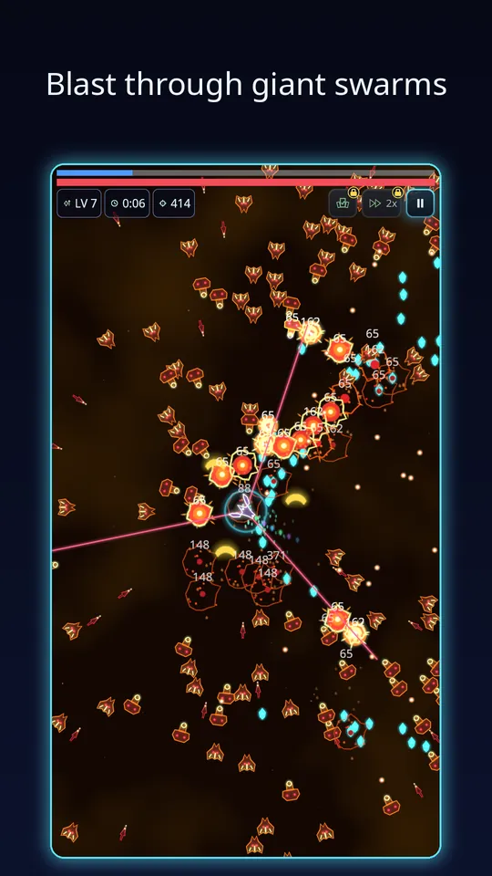
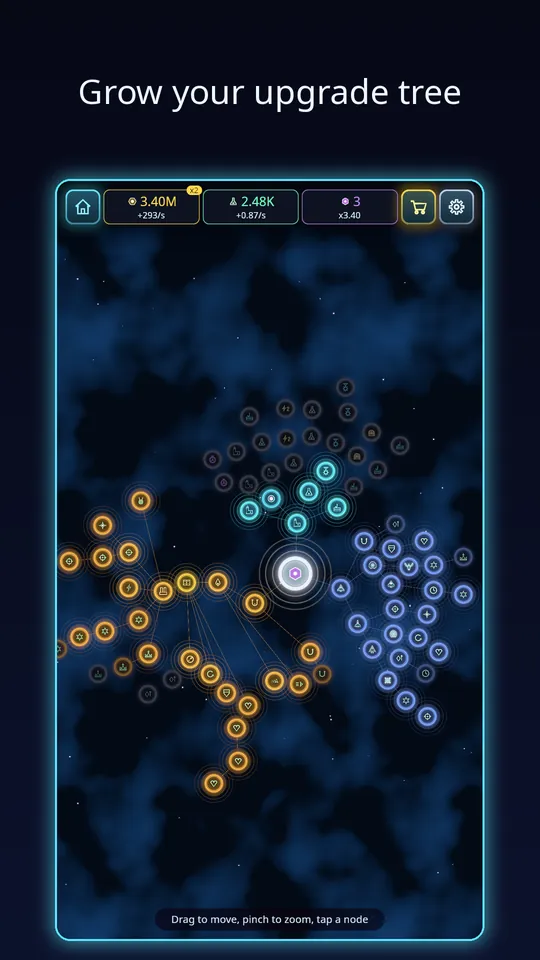

These Void Swarm beginner tips come from watching how new players actually spend their first days with the game. None of them are secrets, but together they save a lot of frustration. If you are not sure what the game is yet, start with our overview of Void Swarm and come back.
1. Learn to move before you learn to build
Your weapons fire on their own, so the one thing you control is where the drone is. Drag anywhere on the screen, and keep drifting in wide circles rather than standing still. The swarm closes in from all sides, and the most common early death is being boxed in at the edge. When a crowd thickens in one direction, slide toward the gap before it closes.

2. Collect crystals, but not at any price
Crystals fill the experience bar and every level-up is a free power-up, so they matter. Still, a crystal sitting inside a pack of enemies is rarely worth the trip. Let the weapons clear a little space first, then sweep through.
3. Build around two or three weapons
With 20 weapons and 15 passives it is tempting to take one of everything. Resist that. Weapon and passive slots are limited, and a weapon only evolves once it is maxed and paired with the right passive. Pick a weapon you like in the first levels and keep upgrading it. The level-up cards even show a hint when a weapon is close to evolving. Our guide to weapon evolutions in Void Swarm lists how the pairings work.

4. Use Auto Pick when you understand the cards
Auto Pick is an optional extra that chooses level-up cards for you, with weapon synergy in mind. It is useful when you want relaxed runs. While you are learning, though, choosing by hand shows you what each card does, and that knowledge is what makes you stronger later.
5. Spend Scrap early and often
Between runs you collect Scrap and Research Points from your base. The cheapest upgrades pay back fastest, so do not save for a single expensive node while there are small ones on offer. The Upgrades screen is a tree: tap a node to see what it does now and what it does next. Buy what you can afford, then launch again.

6. Check Missions every day
Daily missions ask for simple things, like surviving ten minutes in runs or destroying a number of enemies, and they pay Scrap and Research Points. There is also a weekly challenge with its own modifiers, and a login streak. If two or more rewards are waiting, there is a Claim all button, so it takes seconds.
7. Let the base work while you are away
The base earns even when the game is closed. Open the game, collect, spend, run, close it again. That rhythm beats long grinding sessions. The research tree includes upgrades that raise how many hours of offline production you can store, which is worth remembering when you plan your next Research spend. For the details, read how offline earnings and prestige work.
8. Do not fear a failed run
A run that ends early still pays out. You keep the Scrap and crystals you collected, and the run-end screen shows the goal closest to completion, such as an achievement or a mission, plus a button to play again. Treat every run as progress, not a pass or fail test.
A sample first session
To make the tips concrete, here is a first session that works well. Launch the first sector and focus on staying alive until the boss, not on the highest score. Pick weapons that look fun, and notice which cards mention an evolution partner. When the run ends, read the screen that shows your payout and the goal closest to done. Back on Home, spend your Scrap on the cheapest upgrades, claim any missions that are ready and put a few Research Points into the economy branch. Then launch again. Two or three loops like this will visibly change how the first sector feels.
Mistakes to avoid
- Hoarding currency. Upgrades make the next run stronger, and a stronger run earns more.
- Standing still to shoot. The weapons aim for you, so use your thumb to dodge instead.
- Chasing every crystal. A safe path matters more than one pickup.
- Skipping the daily claims. They are quick, and the rewards add up over a week.
A note on difficulty tiers
Every sector has five tiers: Normal, Hard and three Nightmares. Do not rush the tiers. Clear a sector on Normal first, build up your base, and only then try Hard. Higher tiers pay more per run, but the enemies are much tougher, and a stronger base makes the step far gentler. Endless mode is a good way to test a build when you want to see how long it can hold out.
Next steps
Once you can reliably reach the boss in the first sector, try a harder tier, or look at the genre as a whole in our piece on idle survivor games on Android. And if you have not yet played, you can download Void Swarm: Idle Survivor on Google Play for free.
Try it: get Void Swarm: Idle Survivor on Google Play, play three runs, spend what you earn and see how much further you get on the fourth.
Frequently Asked Questions
What should I upgrade first in Void Swarm: Idle Survivor?
Start with the cheap base and hangar upgrades that raise Scrap production and run strength, then spend Research Points in the economy branch. Cheaper nodes pay back fastest early on, so buy what you can afford before saving for one big node.
Should I use Auto Pick for level-ups?
Auto Pick chooses cards for you with weapon synergy in mind and repairs at low health. It is handy, but picking manually while you learn teaches you which weapons and passives combine into evolutions.
How do I survive longer in a run?
Keep moving, never stand in the middle of a crowd, collect crystals when it is safe and build around two or three weapons instead of spreading thin. Evolve a maxed weapon as soon as its passive is ready.